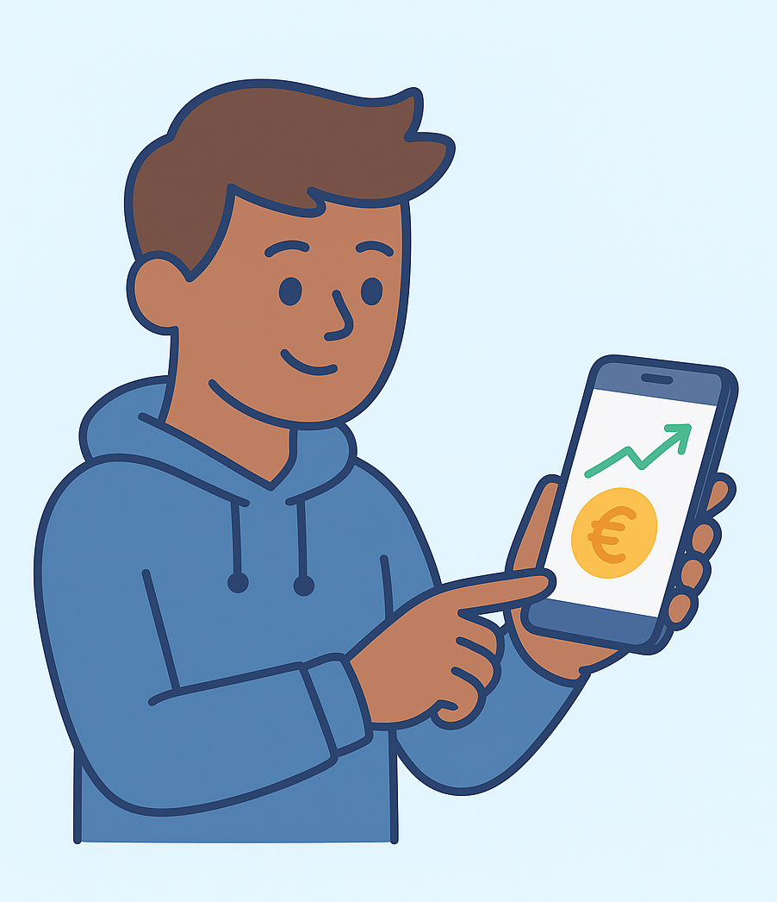

2 Warum Investieren heute wichtiger ist als je zuvor
2.1 Ein persönlicher Start
Stell dir vor, du hältst dein erstes selbstverdientes Geld in der Hand. Vielleicht sind es 500 Euro vom Nebenjob, vielleicht der erste Lohn nach der Ausbildung oder nach dem Studium. Du überlegst: Soll ich das einfach auf dem Konto lassen? – schließlich fühlt sich das sicher an. Geld auf dem Konto bedeutet Kontrolle, keine Risiken, und du kannst es jederzeit abheben.
Aber dann schaust du ein Jahr später auf den Kontostand. Die Zahl ist gleich geblieben, doch du merkst: Dein Geld kann sich heute weniger leisten als damals. Ein Döner kostet statt 5,50 jetzt 6 Euro, das Smartphone ist teurer geworden, und die Stromrechnung sowieso. Irgendetwas ist passiert – obwohl du keinen Cent ausgegeben hast.
Das Phänomen dahinter ist eines der wichtigsten wirtschaftlichen Konzepte überhaupt: Inflation. Und sie ist der erste Grund, warum Investieren heute wichtiger ist denn je.
2.2 Inflation – der unsichtbare Gegenspieler deiner Ersparnisse
Inflation bedeutet, dass Preise im Schnitt steigen. Ein Einkaufskorb, der heute 100 Euro kostet, kostet in ein paar Jahren vielleicht 110 oder 120 Euro. Das klingt wenig, aber über längere Zeiträume ist es dramatisch.

Beispiel 1: Der schleichende Verlust
Angenommen, du hast 10 000 Euro auf einem Tagesgeldkonto. Die Inflation beträgt 3 % pro Jahr und dein Konto bringt 1 % Zinsen. Nach einem Jahr hast du zwar 10 100 Euro auf dem Konto – aber du kannst dir mit diesem Geld nur Waren im heutigen Wert von 9 800 Euro kaufen. Dein reales Vermögen ist also gesunken, obwohl der Kontostand gestiegen ist.
Nach zehn Jahren sähe das so aus:
👉 Nominal (auf dem Konto): rund 11 046 Euro
👉 Kaufkraft in heutigen Preisen: rund 8 200 Euro Du hast also fast 20 % deines Wertes verloren, ohne etwas ausgegeben zu haben.
Warum das heute besonders relevant ist
In den letzten Jahren schwankte die Inflation erheblich. Phasen von Nullinflation waren selten stabil, und Ereignisse wie Energiekrisen, Lieferkettenprobleme oder expansive Geldpolitik zeigen: Langfristig wird Geld immer etwas an Wert verlieren.
Früher konnte ein Sparkonto das ausgleichen – Zinsen lagen oft über der Inflationsrate. Heute aber liegen sie meist darunter. Das bedeutet: Wer nur spart, verliert real.
2.3 Warum Sparen allein nicht mehr ausreicht
Unsere Eltern und Großeltern lebten noch in einer Welt, in der „Sparen“ als Tugend galt. Man legte Geld aufs Sparbuch, bekam Zinsen, und nach Jahren war das Guthaben deutlich gewachsen. Banken warben mit Zinssätzen von 4 %, 5 %, manchmal 8 % – ganz ohne Risiko.
Diese Zeiten sind vorbei.
Drei Gründe:
- Niedrigzinsumfeld: Die Notenbanken halten die Zinsen häufig niedrig, um die Wirtschaft zu stützen. Niedrige Zinsen bedeuten niedrige Renditen auf Sparguthaben.
- Inflation frisst Zinsgewinne: Selbst wenn du Zinsen erhältst, ist deren Kaufkraft oft geringer als die Inflation.
- Lebensstil und Vorsorge verändern sich: Die gesetzliche Rente wird für viele nicht ausreichen; private Altersvorsorge wird immer wichtiger.

Beispiel 2: Sparbuch vs. Investment
Stell dir zwei Personen vor:
👉 Person A legt 10 000 Euro auf das Sparbuch und erhält 1 % Zinsen pro Jahr.
👉 Person B investiert 10 000 Euro in einen breit gestreuten Indexfonds (ETF), der im Schnitt 6 % Rendite pro Jahr bringt. Nach 30 Jahren:
👉 Person A hat: rund 13 500 Euro
👉 Person B hat: rund 57 400 Euro Der Unterschied: über 40 000 Euro – und das bei gleichem Startkapital. Das ist die Macht des Zinseszinses, aber auch der Beweis, dass Sparen ohne Investieren langfristig nicht reicht.
2.4 Was hinter „Investieren“ wirklich steckt
Investieren bedeutet, dein Geld für dich arbeiten zu lassen. Es ist der Schritt vom Konsumenten zum Besitzer. Du gibst Geld nicht aus, sondern überlässt es Unternehmen, Staaten oder Projekten, damit diese etwas Produktives damit machen – und du wirst dafür beteiligt.
Das kann ganz unterschiedlich aussehen:
👉 Du kaufst Aktien eines Unternehmens → du bist Miteigentümer.
👉 Du erwirbst Anleihen → du leihst dein Geld und bekommst Zinsen.
👉 Du investierst in ETFs → du hältst einen kleinen Anteil vieler Unternehmen. Je nach Risiko und Zeithorizont kannst du dein Geld dabei in verschiedene Anlagen streuen. Aber das Grundprinzip ist immer gleich: Du lässt Kapital für dich arbeiten, statt es nur aufzubewahren.
2.5 Was erfolgreiche Anlegerinnen und Anleger gemeinsam haben
Es gibt zahllose Bücher, Blogs und YouTube-Videos über erfolgreiche Investoren. Viele nennen bekannte Namen wie Warren Buffett, Ray Dalio oder Cathie Wood. Doch statt auf Einzelpersonen zu schauen, lohnt sich die Frage: Was haben erfolgreiche Anleger gemeinsam – unabhängig von der Strategie?
1. Sie denken langfristig
Kurzfristige Schwankungen interessieren sie wenig. Buffett sagt sinngemäß, er kaufe Unternehmen, nicht Aktienkurse. Erfolgreiche Anleger betrachten den Markt wie Jahreszeiten – es gibt Sommer, Herbst, Winter, und alle gehen wieder vorbei.
2. Sie verstehen Risiko
Erfolgreiche Investoren wissen, dass Rendite ohne Risiko nicht existiert. Aber sie vermeiden unnötiges Risiko durch Diversifikation: also durch die Streuung ihres Vermögens auf verschiedene Anlagearten.
3. Sie handeln nach Regeln
Emotionen sind der größte Feind des Investors. Panik oder Gier führen zu Fehlentscheidungen. Deshalb folgen Profis klaren Regeln oder Strategien, statt impulsiv zu reagieren.
4. Sie lernen ständig dazu
Kein Markt bleibt gleich. Erfolgreiche Anleger reflektieren, was funktioniert und was nicht – sie bilden sich weiter, passen sich an, bleiben offen.
5. Sie haben Geduld
Reich werden wollen viele – aber die Reichen werden es oft, weil sie Geduld hatten. Komplexe Zinseszinsprozesse brauchen Zeit. Eine Verdopplung deines Vermögens braucht bei 7 % Rendite rund zehn Jahre, bei 3 % aber 24 Jahre. Das ist kein Trick, sondern Mathematik – und Geduld ist ihr heimlicher Verbündeter.
2.6 Psychologie: Warum viele trotzdem nicht investieren
Trotz aller Argumente investieren viele junge Menschen nicht. Warum?
- Angst vor Verlusten: Viele denken, Investieren ist ein Glücksspiel. Medien berichten über Crashs, nicht über die 290 Tage dazwischen, an denen nichts Dramatisches passiert.
- Komplexitätsgefühl: „Ich verstehe das sowieso nicht.“ – Ein verbreiteter Irrtum. In Wahrheit sind die Grundprinzipien simpel, wenn man sie Schritt für Schritt erklärt.
- Keine Zeit / kein Startkapital: Viele glauben, man brauche Tausende Euro. Dabei genügt ein regelmäßiger Sparplan ab 25 Euro.
- Elternvorbild: Wenn Eltern nie investiert haben, gibt es oft keine Vorbilder oder Gespräche über Finanzen.
- Kurzfristige Wünsche: Konsum wird sofort belohnt, Investieren erst später. Psychologisch ist das schwer: Ein neuer Sneaker heute fühlt sich besser an als 100 Euro mehr in 10 Jahren – obwohl Letzteres langfristig weit wertvoller ist.
2.7 Finanzielle Bildung als Superkraft
In der Schule lernst du über Gedichtanalyse, Photosynthese und Integralrechnung. Aber wie man Geld anlegt, kommt selten vor. Dabei beeinflusst dieses Wissen fast alles im Leben: Wohnung, Familie, Reisen, berufliche Freiheit.
Finanzielle Bildung ist also keine Gier nach Reichtum, sondern Selbstbestimmung. Sie bedeutet: Du entscheidest, was mit deinem Geld passiert – und musst dich nicht auf Banken, Werbung oder „Tipps“ verlassen.
Studien zeigen: Menschen mit grundlegender Finanzbildung treffen rationalere Entscheidungen, geraten seltener in Schuldenfallen und achten stärker auf ihre Zukunft. Das ist kein Zufall, sondern Kompetenz.
2.9 Der Wendepunkt: Von Sparen zu Investieren
Viele Finanzverhalten ändern sich, wenn man einmal versteht, dass Geld keine statische Zahl ist, sondern ein Werkzeug. Hier ein Vergleich beider Mindsets:
| Sparen-Denken | Investieren-Denken |
|---|---|
| Sicherheit steht über allem | Sicherheit entsteht durch Wissen & Streuung |
| Ich „bewahre“ Geld auf | Ich „nutze“ Geld produktiv |
| Ich fürchte Schwankungen | Ich akzeptiere sie als Teil des Spiels |
| Mein Konto zeigt Erfolg | Mein Vermögenswachstum zeigt Erfolg |
| Kurzfristiger Fokus | Langfristiger Fokus |
Wechselst du von der linken zur rechten Spalte, verändert sich dein Verhältnis zu Geld komplett. Du beginnst zu denken wie eine Anlegerin oder ein Anleger – rationaler, strategischer, entspannter.
2.10 Die große Herausforderung: Unsicherheit
Kein Investment ist risikofrei. Doch die Alternative – alles auf dem Konto zu lassen – ist garantiert verlustreich, wenn man Kaufkraft betrachtet.
Ökonomisch gesehen ist Risiko auch nicht nur „Gefahr“, sondern die Streuung möglicher Ergebnisse. Jede Renditechance kommt mit Unsicherheit. Aber: Diese Unsicherheit kann man steuern. Genau darum geht es in modernen Anlagemethoden – etwa Diversifikation, Faktorprinzipien oder regelbasierte Strategien.
Du wirst in den späteren Kapiteln lernen, wie das funktioniert – ohne Formeln, sondern anhand von Beispielen und intuitiven Bildern.
2.11 Was Investieren wirklich möglich macht
Investieren ist Mittel zum Zweck. Es gibt keine „perfekte Strategie“ – aber es gibt klare Ziele:
👉 Freiheit: Du kannst entscheiden, wann und wie du arbeitest.
👉 Sicherheit: Du bist nicht komplett abhängig von Rente oder Arbeitgeber.
👉 Selbstwirksamkeit: Du erlebst, dass du Kontrolle über deine Finanzen hast.
👉 Sinn: Du kannst bewusst in Branchen, Technologien oder Werte investieren, die du unterstützen willst (Stichwort: ESG‑Investing). Diese Ziele sind emotional – und genau das ist wichtig. Denn Emotionen motivieren langfristig mehr als Zahlen.

2.12 Ein Blick in die Zukunft
Die Welt verändert sich rasant: Digitalisierung, Klimawende, neue Unternehmensmodelle, globale Märkte. Investieren heißt, an dieser Entwicklung teilzunehmen. Wer investiert, ist Teil des Fortschritts – nicht nur Beobachter.
Dabei musst du keine Million haben. Du brauchst nur die Entscheidung: Ich lasse mein Geld nicht schlafen. Selbst 25 Euro monatlich ziehen über Jahrzehnte Kreise – wie ein Stein, den du in ruhiges Wasser wirfst.
2.13 Was du aus diesem Kapitel mitnehmen solltest
- Inflation ist wie ein stiller Mitesser deines Vermögens; sie reduziert Kaufkraft, auch wenn der Kontostand gleich bleibt.
- Sparen allein reicht nicht. In einer Welt niedriger Zinsen verliert reines Sparen real an Wert.
- Investieren bedeutet Teilhabe. Du lässt dein Geld an Unternehmen, Projekten und der Weltwirtschaft mitarbeiten.
- Erfolgreiche Anleger denken langfristig, streuen Risiken, handeln nach Regeln, lernen ständig dazu und bleiben geduldig.
- Finanzielle Bildung ist Selbstbestimmung. Wer versteht, wie Geld funktioniert, trifft die besseren Lebensentscheidungen.
- Jeder kann starten. Du brauchst keine großen Summen, sondern den ersten Schritt und Durchhaltevermögen.
2.14 Zum Nachdenken
„Die beste Zeit, einen Baum zu pflanzen, war vor zwanzig Jahren.
Die zweitbeste Zeit ist jetzt.“ – Chinesisches Sprichwort
Investieren ist genau das: einen Baum pflanzen. Am Anfang siehst du nur einen kleinen Setzling, kaum sichtbar. Aber Tag für Tag wächst er, unspektakulär, aber stetig. Und in Zukunft spendet er Schatten, Früchte oder Holz – je nachdem, was du daraus machst.
2.15 Ausblick
Im nächsten Kapitel wirst du erfahren, was Risiko wirklich bedeutet, warum es kein Feind, sondern ein natürlicher Teil des Investierens ist – und wie du lernst, Schwankungen gelassen zu sehen. Dabei wirst du merken: Wer Risiko versteht, kann es steuern – und das ist der nächste Schlüssel zu einem klugen, entspannten Umgang mit Geld.